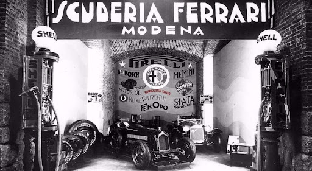
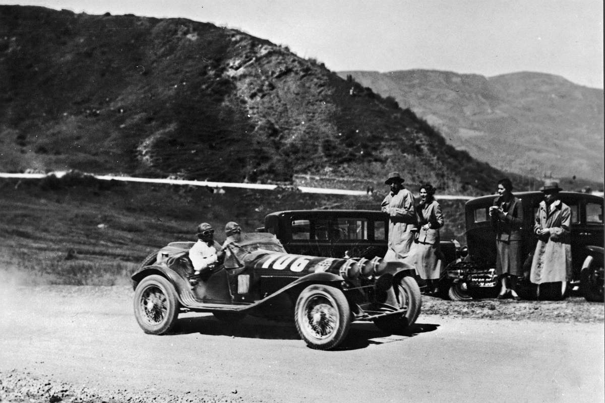
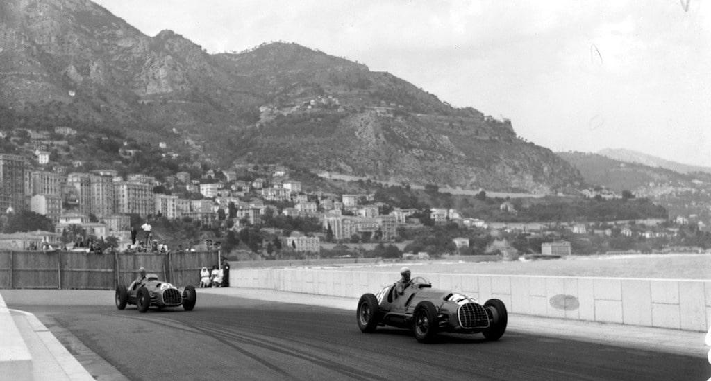
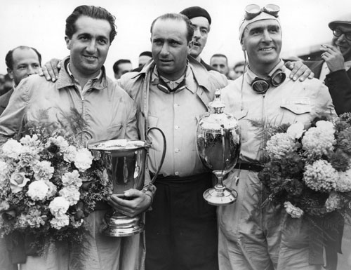
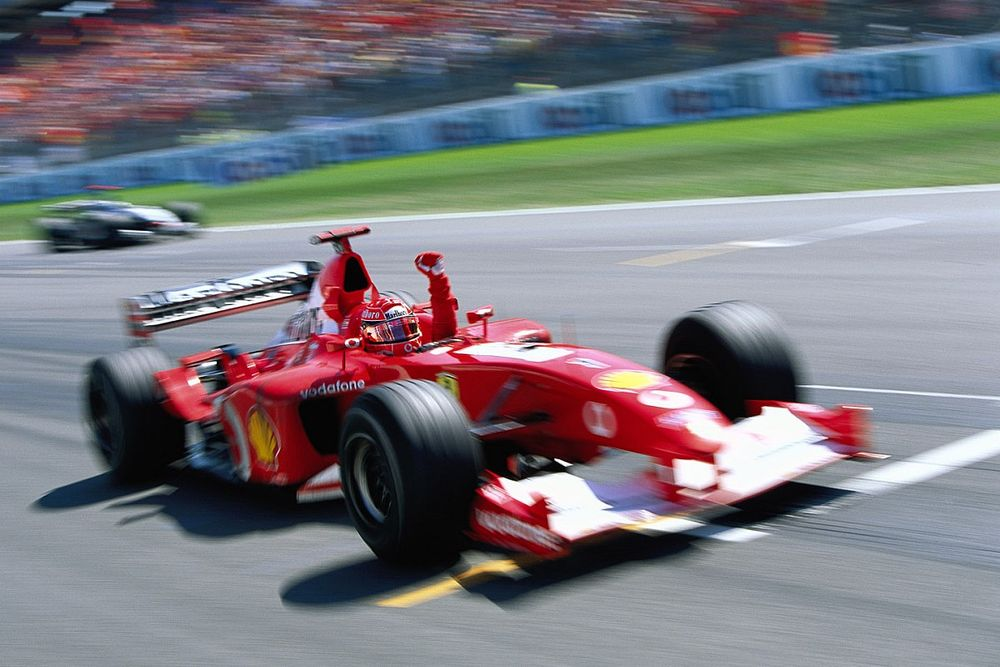
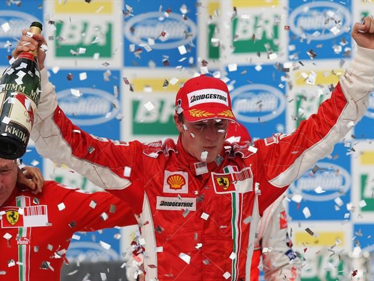
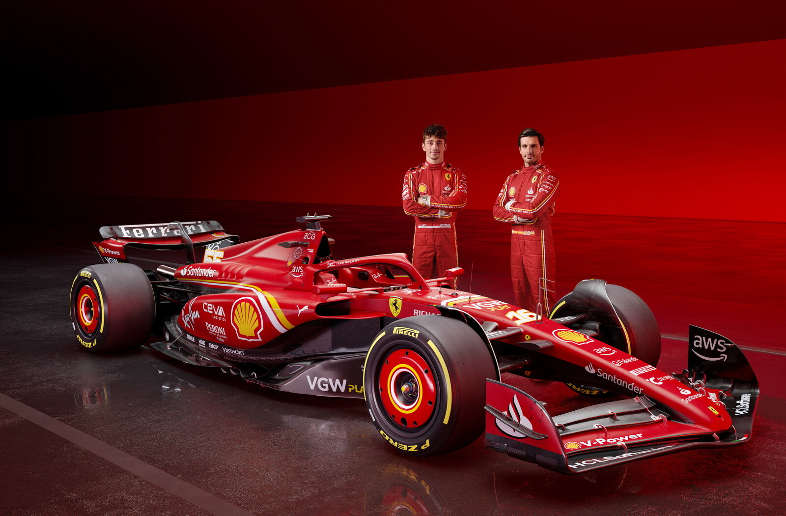

|  |
La fondazioneLa fondazione della Scuderia Ferrari risale al 1929, quando Enzo Ferrari decise di creare una squadra automobilistica per gestire i piloti e le vetture da corsa dell'Alfa Romeo. Inizialmente denominata "Scuderia Ferrari" ma con la collaborazione ufficiale dell'Alfa Romeo, questa iniziativa segnò l'inizio del percorso he avrebbe portato alla creazione di una delle scuderie più iconiche e vincenti nella storia del motorsport. |
Le prime squadreLa passione di Enzo Ferrari per le corse automobilistiche, unita alla sua determinazione nel vincere, lo spinsero a formare una squadra di talentuosi piloti e ingegneri. Grazie alla sua abilità nel gestire le risorse umane e tecniche disponibili, la Scuderia Ferrari ottenne rapidamente successi significativi nelle competizioni automobilistiche dell'epoca. |
 |
|  |
Il debuttoIl debutto della Scuderia nel campionato mondiale di Formula 1 risale al 1950 al Gran Premio di Monaco, la seconda prova stagionale, dove giunse seconda grazie ad Alberto Ascari. Nella stessa stagione arrivò seconda anche nel Gran Premio d'Italia, sempre grazie ad Ascari. La prima pole position e la prima vittoria arrivarono invece l'anno seguente al Gran Premio di Gran Bretagna grazie a José Froilán González. |
I primi campionati vintiIl primo campionato del mondo piloti conquistato dalla Ferrari fu nella stagione 1952, quando Ascari si laureò campione del mondo su una Ferrari 500 F2. Ascari replicò la vittoria nel campionato anche nel 1953. La Ferrari tornò a conquistare il mondiale piloti nel 1956 grazie alla vittoria di Juan Manuel Fangio. Il successo nel campionato piloti fu ripetuto nel 1958 grazie a Mike Hawthorn. |
 |
|  |
Titoli e recordDall'anno del debutto in poi, in Formula 1, la Ferrari ha collezionato una lunghissima serie di successi. Ad oggi, la scuderia è la più vincente in assoluto nella storia del torneo, con 16 campionati costruttori e 15 Campionati Piloti vinti. La “Rossa” ha poi raggiunto moltissimi altri record: il maggior numero di Gran Premi disputati fino a oggi (1052); il maggior numero di vittorie (242); il maggior numero di podi (798); il maggior numero di doppiette (85); il maggior numero di pole position (242); il maggior numero di giri veloci (259); il maggior numero di stagioni consecutive con almeno una vittoria ottenuta in ciascuna di esse (20, dal 1994 al 2013). |
I piloti della rossaNella storia della Ferrari i piloti sono stati oltre 100 e 40 di loro hanno vinto almeno un Gran Premio. Michael Schumacher è il pilota che ha vinto più titoli: ha guidato in pista la Ferrari per ben 10 anni, dal 1996 al 2006, vincendo ben 5 titoli consecutivi dal 2000 al 2004, disputando 180 Gran Premi e ottenendo 72 vittorie. Nella classifica dei migliori piloti della Ferrari ci sono poi Alberto Ascari e Niki Lauda che hanno vinto 2 titoli; a seguire, ci sono i sei piloti che hanno vinto i restanti titoli: Kimi Räikkönen (2007), Jody Scheckter (1979), John Surtees (1964), Phil Hill (1961), Mike Hawthorn (1958), Juan Manuel Fangio (1956). |
 |
|  |
La squadra attualeAd oggi la squadra ufficiale della Scuderia Ferrari di f1 è composta da Charles Leclerc, pilota monegasco, e da Carlos Sainz, pilota spagnolo.Per sapere più informazioni sui nostri piloti clicca l'immagine qui a sinistra |